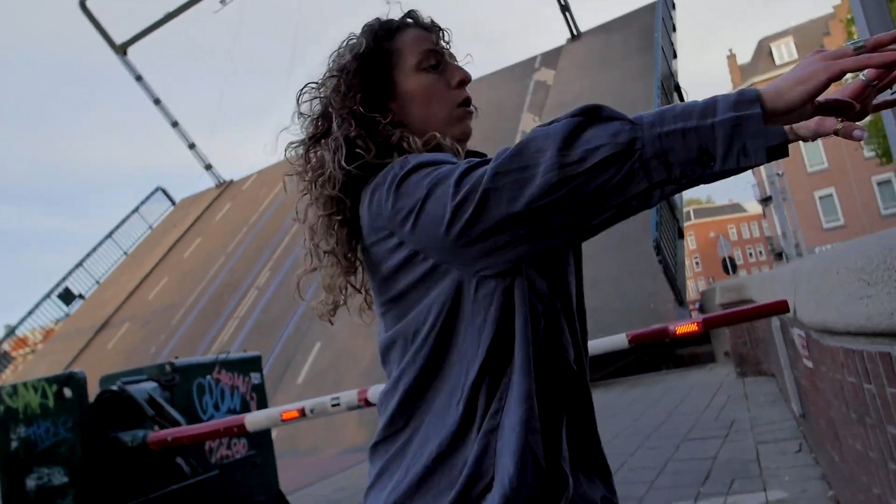
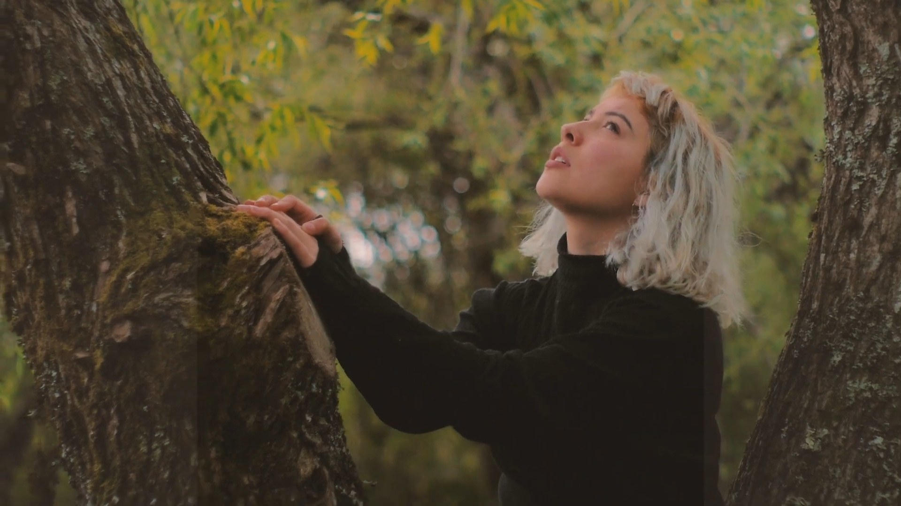

A practice by dEUSeXmACHINA films
The Session
The Session is where the film happens.
An audiovisual practice built on the encounter between a real person, a real place, a camera, movement and time.
The aim is not to predetermine the film, but to create the conditions for something unexpected to happen.
We don't create everything. We create the conditions for something to happen.
Visual introduction




The process
Meet
Two people, before anything is filmed.
Location
The agreement of a trajectory.
One take
An improvised sequence.
Film
Captured presence.
Mistakes, accidents and unexpected events may become part of the work.
The movement exists in time.
Whenever appropriate, long takes and continuous shots. The dancer should not have to dance the edit.
The sessions


 Shanghaimundomoebio
Shanghaimundomoebio
 ColchaguaPaulina Matus
ColchaguaPaulina Matus
 ValparaísoCatalina Matus
ValparaísoCatalina Matus
 ValparaísoFer Molteni
ValparaísoFer Molteni
 ValparaísoAlejandra Parga
ValparaísoAlejandra Parga
 ValparaísoSimona Lanza
ValparaísoSimona Lanza
 ValparaísoNahua
ValparaísoNahua
 ValparaísoVale Camus
ValparaísoVale Camus
 Limamundomoebio
Limamundomoebio
 PichilemuCristina Vol
PichilemuCristina Vol
 Puerto NatalesAmaranta
Puerto NatalesAmaranta
 ValdiviaJaviera Carromatto
ValdiviaJaviera Carromatto
 Viña del MarCatalina Fernanda
Viña del MarCatalina Fernanda
A person enters a place.
The camera begins to move.
Something unexpected happens.
The film emerges.
The Session is where the film happens.